| 日付 | 2016年11月13日（日） |
|---|---|
| 山域 | 日光周辺 |
| メンバー | 家族（妻、長女・5歳、長男・3歳） |
| 山行形態 | 子連れ日帰り |
| アクセス | 車 |
| ルート (Map) | センターハウス駐車場 (9:12) - (9:54) ブナ平 - (11:07) 鹿俣山 (11:49) - (12:38) スキー場 (13:06) - (14:22) センターハウス駐車場 |
本日は快晴予報。秋になりようやく晴れの日が多くなってきた。
今回も少し足を延ばして、上州武尊山の一角にある鹿俣山に行ってみる。
駐車場は標高1210m。北にあるこの地はもう雪が見られる。
子供達は早速雪遊びをしている。
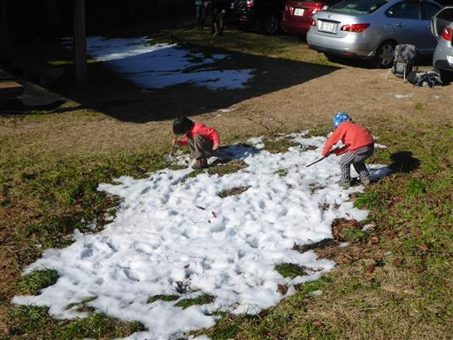
水たまりには氷が張っている。朝は非常に寒い。
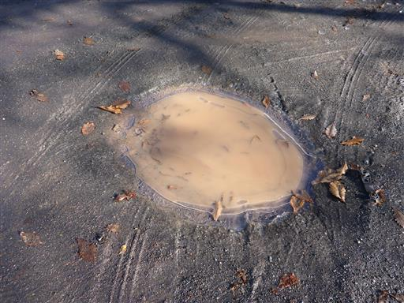
車道をしばらく歩くと登山口に到着する。
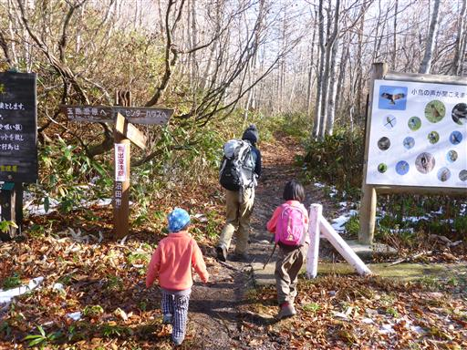
登山口に杖として使えるように棒が何本か置いてあり、娘は早速それを使っている。
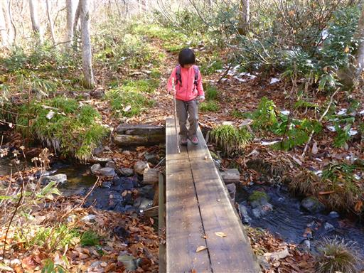
この辺りはブナの木が多い。どこを見渡してもブナだらけだ。
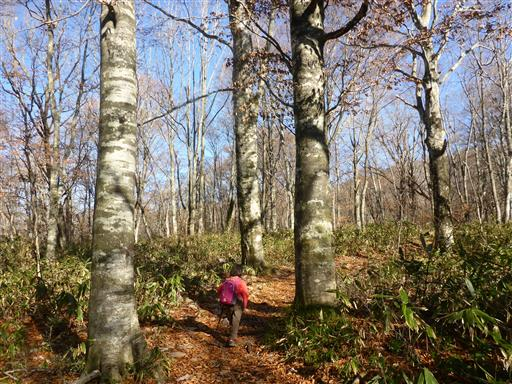
ブナは黄葉がきれいなのだが、もうすっかり葉を落としてしまっている。
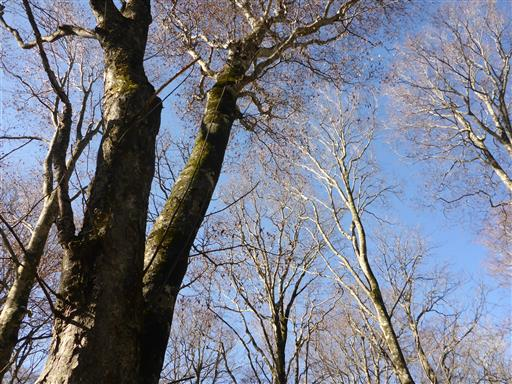
ミズメの巨木。側に沼田の名木百選との標識が立っている。
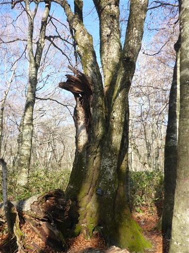
展望は開けないが、周囲には美しい森が広がっている。
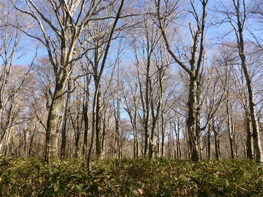
大きな切り株。上に乗ることができる。
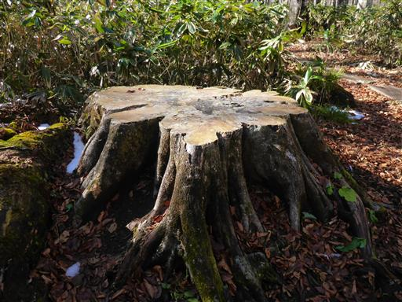
きれいな緑色の笹原。雪が積もれば一面雪原になるのだろう。
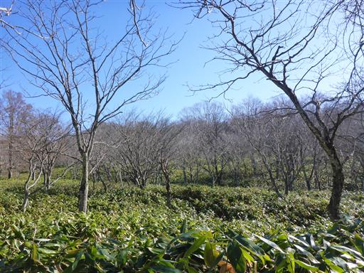
登山道に雪が現れ出す。
子供達は最初喜んでいたが、だんだん飽きてきたようだ。
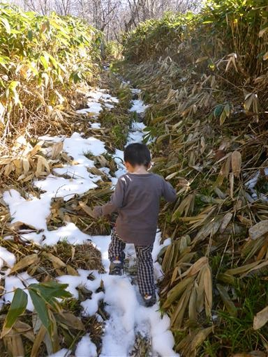
森を抜けるとスキー場に出てくる。息子は全部歩けると思っていたが、ここでリタイア。
短いコースを選んだのだが、今日も全部歩けなかった。
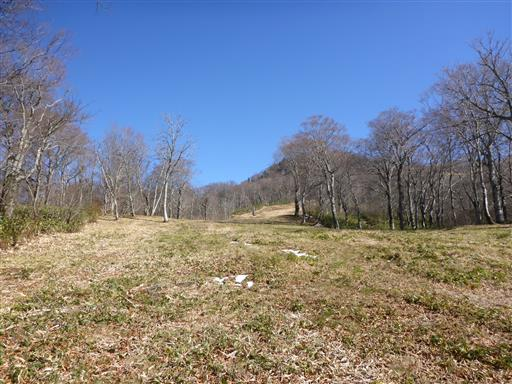
スキー場に出ると一気に展望が広がる。
間近に雪に覆われて白く染まった谷川岳が望める。
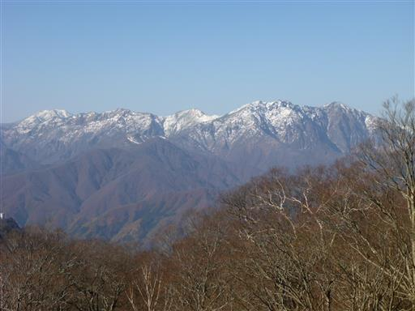
かなり霞んでいるが、浅間山も見えている。
こちらも雪に覆われているようだ。
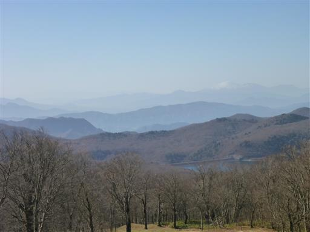
スキー場のリフト。周囲の山々を望める展望の良さそうなリフトだ。
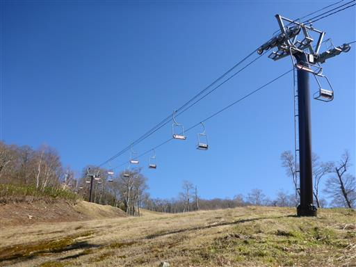
高台からスキー場を見下ろす。遠くには上州の山々が折り重なって見える。
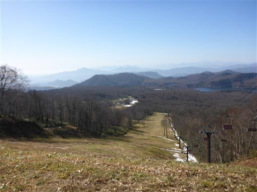
スキー場からしばらく登ると鹿俣山の山頂に到着する。標高1636m。

山頂からは南側の展望が広がる。
上州三峰山、子持山、小野子山、背後には榛名山が見えている。
どれも懐かしい山々だ。
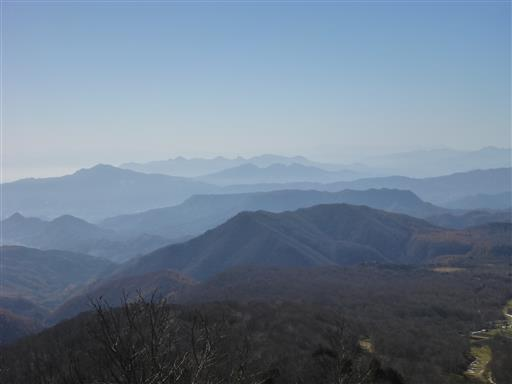
こちらは赤城山。上州を代表する名峰だ。
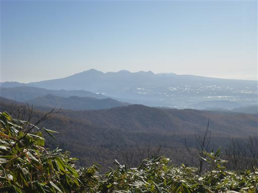
一方、北側の展望は樹木に隠されていて良く見えない。
谷川連峰の一角が見えるのみだ。
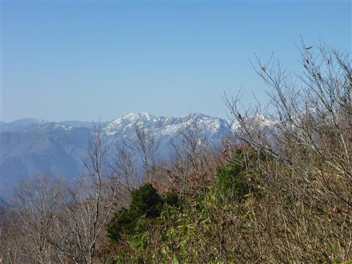
上州武尊山の一角の山なのだが、上州武尊山の山頂部も良く見えない。
この山は絶好の位置にありながら、残念ながら眺望絶佳とまではいかない。
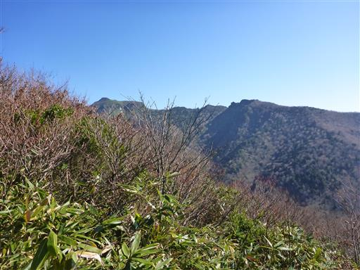
山頂で昼食を取ったら下山開始。下山は違うコースを選ぶ。
笹原の中に立派な木が2本立っている。
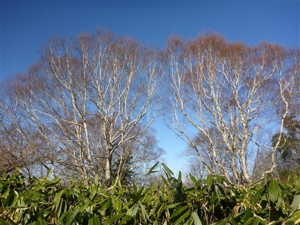
下山中に少しだけ登りがある。雪のある急斜面を慎重に登る。
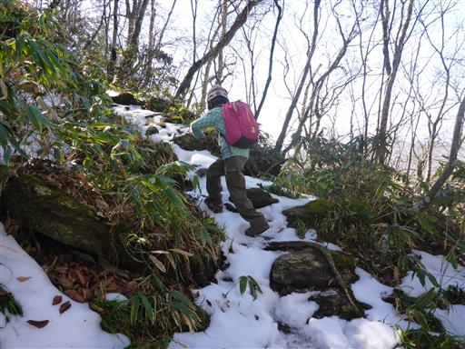
この山はほとんどが笹原だが、一角だけシャクナゲの群落がある。
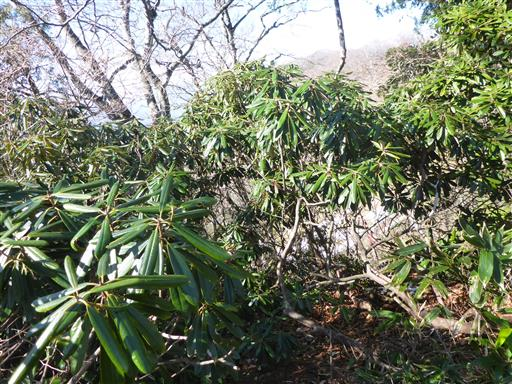
こちらのコースからは上州武尊山の稜線が望める。
全体的に樹木に覆われているので、この季節でもすっきりとは見えない。
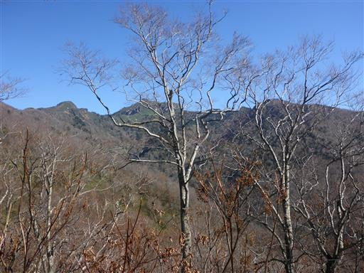
こちらのコースにもスキー場がある。
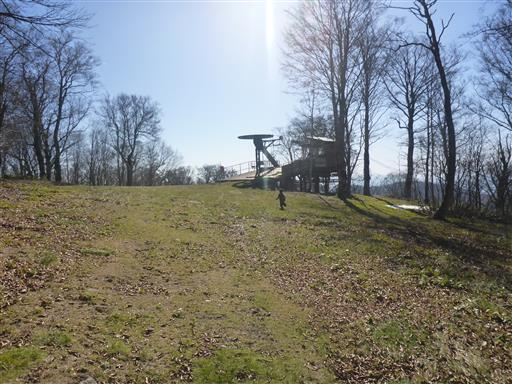
広々としているので、ここでおやつ休憩をとることにする。
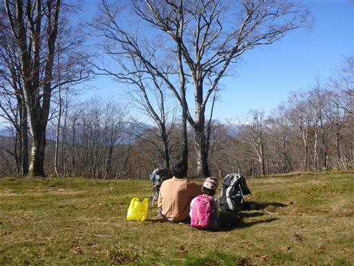
スキー場を少し下ると谷川岳の展望が広がる。
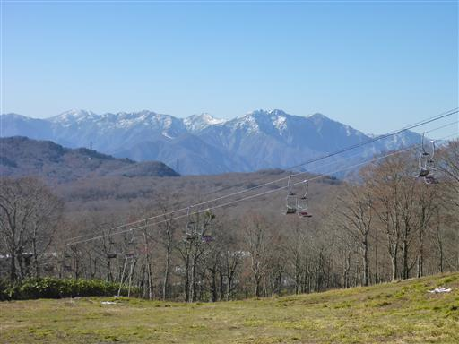
おやつを食べたら、また少し残っている雪でひと遊びする。
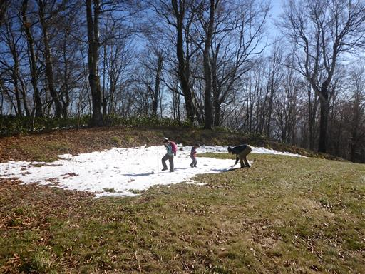
ひと遊びしたら下山を続ける。
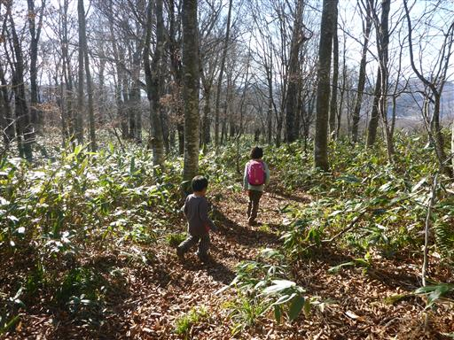
ホオノキの葉がたくさん落ちている。大きな葉で良く目立つ。
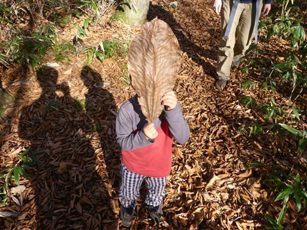
木に飲み込まれた標識。「山火事…」と書かれている。
まれに、このように木に埋もれた標識を見かける。木にとってはいい迷惑だろう。
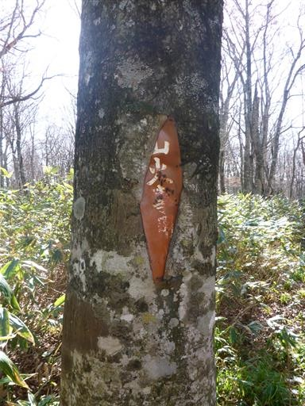
再びスキー場のリフトの下に出て来る。
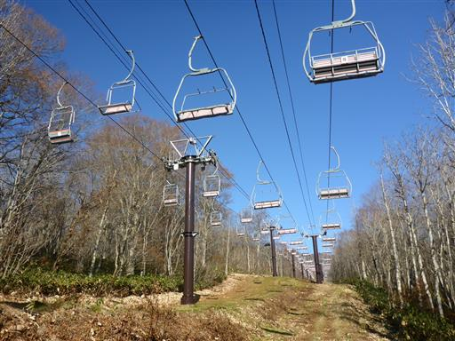
リフトの下にトンネルがあり、そこを潜って横切る。
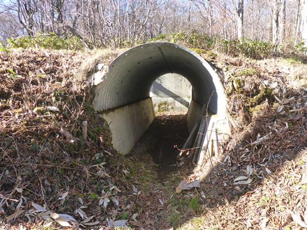
沼田の名木百選・オオヤマザクラ。さほど大きな木ではない。
「大木」ではなく「名木」なので、大きいとは限らないが…
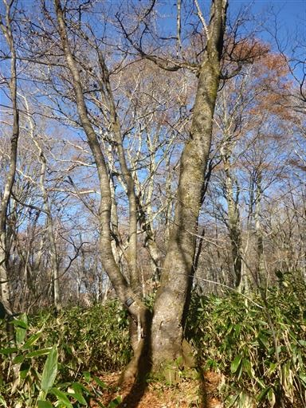
最後は沢沿いの道を歩いて下って行く。
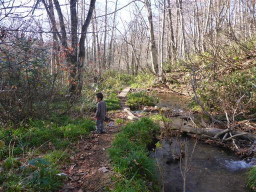
登りの道と合流したら、間もなく車道に出て下山する。
際立った特徴は無い山だったが、素晴らしい快晴のもと気持ちの良い登山ができた。
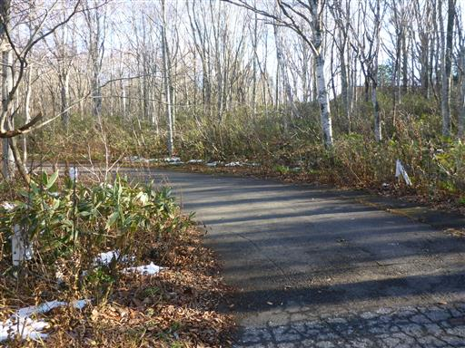